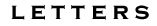

The Rosenbery Family

Rosenbery provides updates about his movements and notes his satisfaction about joining the war effort. He proclaims his faith in God, describing the comfort that such faith provides him while he serves in the army.
Rosenbery tells his father about army life and requests that his father send his repaired watch in the mail. As in earlier writing, Rosenbery expresses his faith in God.
Rosenbery responds to some news from home. He then takes time to disparage those whom he considers traitors: men avoiding military service for the nation. Rosenbery also mentions sending money home. He discusses the weather and planned troop movements. As in earlier letters, Rosenbery expresses his confidence that he does the "will of God."
Rosenbery discusses his salary and his prospects for a furlough. He also delivers advice for those at home and, as in earlier letters, professes his faith in God. He also mentions the weather.
Rosenbery prays for peace and writes that he fights for God and country.
Rosenbery discusses the punishment that awaits those who ignore orders or desert. He also recounts the recent weather. Rosenbery also requests some supplies from home and discusses the frequency of his correspondence.
As in earlier letters, Rosenbery writes that he does the will of God. He also hopes for peace, and he wishes that northerners would further devote themselves to the nation's cause. He then goes onto discuss religion as well as the value of tobacco in the soldiers' camp. Finally, he discusses Christmas dinner, the weather, the possibility of a furlough, his prospects for survival, the war's duration, and correspondence.
Rosenbery discusses his duties as soldiers and goes on to offer his prayers and proclamations of his Christian faith. He says that heaven waits after death, noting that it will contain no war and no slavery. Rosenbery also mentions his duty to fight for his country.
Rosenbery responds to news from home, explains that his faith in God allows him to get through army life, and describes in detail a soldier's food rations. He observes that the veteran soldiers receive provisions in the mail, in addition to their rations. Rosenbery sees the rations as part of his pay from "Uncle Sam."
As in earlier letters, Rosenbery announces his faith in God. He goes onto review casualties that have struck his regiment. He closes by describing his sleeping quarters and requesting more letters as well as his repaired watch from home.
Rosenbery responds to the news of his family, including that of his grandmother's death. He offers praise to God and allegiance to country. Rosenbery then forcefully writes that his acquaintance, John Markey, should return his tools.
Rosenbery mentions the snow and planned troop movement and then describes a recent battle with the enemy.
Rosenbery writes about receiving supplies from home and observes that it does, indeed, snow in the South.
Rosenbery expresses his desire for the North to crush slavery. He goes on to express his disgust for shirkers of military service, contrasting their behavior with his own willingness to sacrifice his life for the nation. Rosenbery also notes that he anticipates a big spring battle, and he requests supplies from home.
Rosenbery exchanges news about his family members. He still awaits pay day as well as his repaired watch.
Rosenbery discusses strategy for crossing the Rapidan River and describes the attempt to implement that strategy. Rosenbery anticipates heavy fighting in the summer; he does not believe he will be able to return home after only nine months of service. As in earlier letters, he still waits for his repaired watch from home, and he also is still waiting to get paid.
Rosenbery expects to be paid shortly. He mentions working on a new building, and he theorizes that he will not be able to come home until the war concludes. He discounts a rumor that troops will soon head to Tennessee; he still awaits his repaired watch from home.
Rosenbery thanks home for a package of food and happily describes his sausage dinner; he also notes that it made him homesick. He discusses the weather and mentions that he still awaits his repaired watch. To close, Rosenbery vows to meet his family in heaven if he does not survive the war.
Rosenbery indicates his affection for his father and his country, and he also mentions the soldiers' payday. Rosenbery expresses optimism that the rebellion will be crushed, and he prays for peace. Rosenbery also mentions that his father need no longer send his repaired watch.
Rosenbery recounts what he knows of an operation against the Confederates and notes that war is a "reality" where he is but a mere "report" at home.
Rosenbery mentions that there may be a furlough in nine months; he also expects to be paid shortly. He hopes for war's end, and, as in earlier letters, he tells his father that he will meet him in heaven, if he does not survive the war.
Rosenbery thanks God for his health. He then writes about the army's marching orders and his anticipation of a clash with Confederates. He states his determination to gain victory for the nation, even at the cost of more lives, even though he also longs for home.
Rosenbery ponders how much longer he will have to serve in the army. He anticipates troop movement and action, and he is willing to remain in service until war's end, if he must. As in earlier letters, Rosenbery vows to meet his family in heaven if he does not survive the war.
As in earlier letters, Rosenbery ponders the potential length of his service and also expresses his desire to serve God and country.
Rosenbery anticipates the summer campaign. Later in the letter, he writes that he continues to be in good health. As in earlier letters, he ponders the duration of his remaining service, and he both professes his desire to perform his duty as well as his longing for home and family. Facing the possibility of death, Rosenbery finds comfort in his Christian faith.
Rosenbery writes about sending some pay home. He goes on to touch upon the weather, the possibility of his release from military duty, his hope that the war will end in the coming summer, and the possibility of his own death in battle.
Rosenbery discusses how to remove "gray backs" from his clothing and also discusses the war, specifically his anticipation of coming clashes with Confederates and his curiosity about the expected length of service for the soldiers. He also mentions the constant drilling that soldiers face in camp.
Rosenbery writes that he visited the 16th Pennsylvania Cavalry to meet up with family and friends there. Rosenbery also wonders--as he often has--about when he will be able to return home. And, as in earlier letters, he requests his repaired watch and his tools from home.
Writing from a Philadelphia hospital, Rosenbery discusses his possibilities for a discharge or a furlough (he hopes in time for the presidential election) and his imminent transfer to work in the Printing Office. As in earlier letters, he requests his repaired watch from home.
Return to the War Years Personal Papers